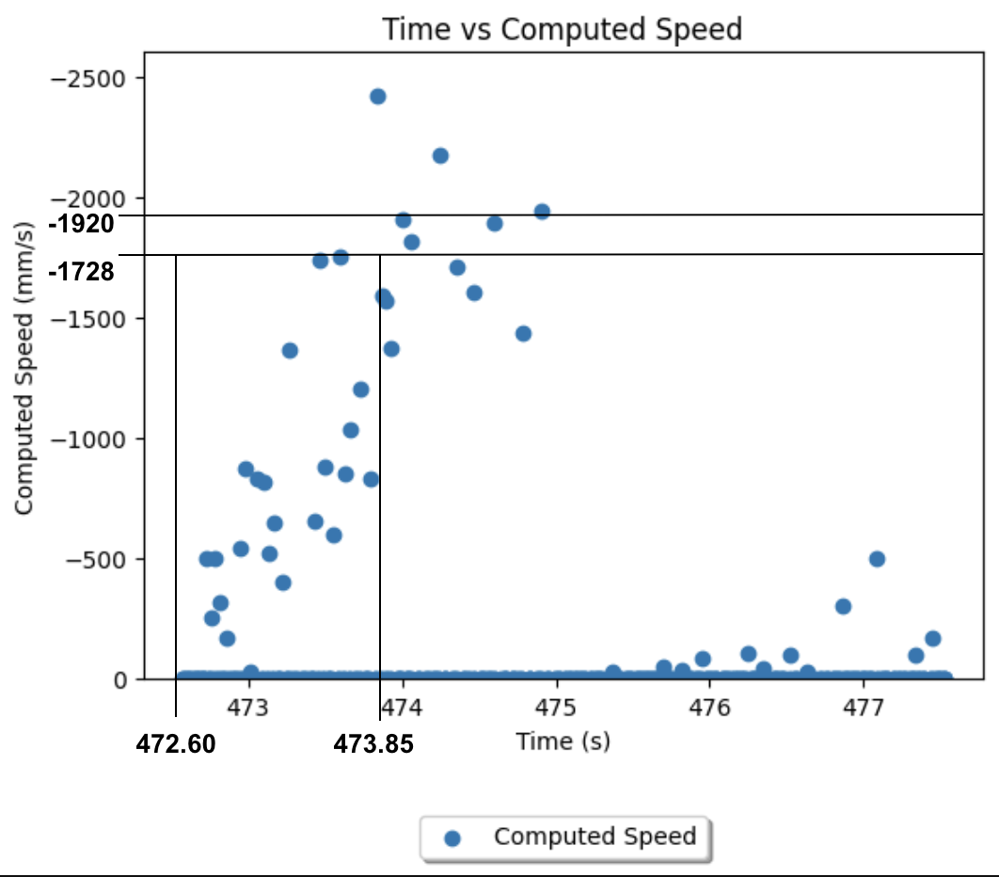
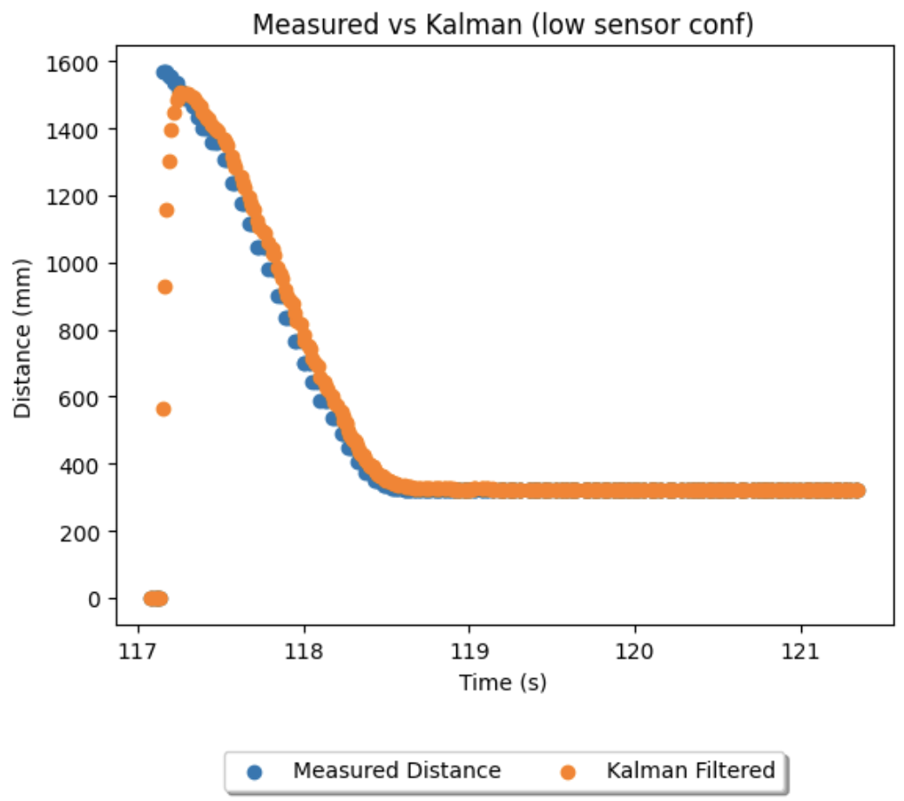

Lab 7
Objective:
In this lab, I implement a Kalman Filter and verify it on previously collected data, then on the robot itself. By fusing a motion model with TOF sensor values, this filter allows for increased speed and accuracy of motion by imputing sensor values and accounting for noise.
Estimating Drag and Momentum
For the A and B matrices of the filter, I needed values for drag and momentum of my robot. Conducting a step response with the typical maximum PWM of 120 seen, and only braking to avoid a max-speed wall collision, I collected the following data streams.
Throughout the collection, I was struggling with outlier values returned by the TOF sensor. This caused the instantaneous speed calculation to return correspondingly imprecise speed values. Visibly, I belive I reached steady state before impact on this run. Having coducted a simple regression on the data, I retrieved values for the steady state speed, and 90% rise time. The steady speed on my home carpet surface was 1920mm/s, and to achieve 90% of this speed takes approximately 1.25s. I expect these values to be undercoated as compared to running on the tiles of the lab for future labs, however, I can always recalibrate if the difference between measured and kalman values becomes signficant. Substituting these into the equations from lecture, I have D = 1/1920 = 0.000521, and M = -d*(1.25)/ln(0.1) = 0.000283.

Initialize KF
Over 5 seconds, I sample approximately 410 times, imputing 0.012 seconds per sample. With this, I create and discretize my A and B matrices as guided in the lab handout. I measure my distances in positive units (a greater value indicates a greater distance to the wall) and thus my C matrix has a positive 1 in the first index.
For process noise, I began with the default values specified in lectures, 10 for both sigma_1 and sigma_2. Likewise for sensor noise I began with the default value of 20. Later in the lab I experiment with and refine these values.
Implement and Testing the Filter
Implementing the filter in Jupyter first allows us to verify the output accuracy against prior collected data. I used the code provided in the lab handout, cross-referenced with Anya's 2022 lab to make this sanity checker.
The PID run I had from lab 6 had the following characteristics:

Applying the filter with the default noise values produced a surprisingly accurate output. The kalman data points largely overlap with the measured data points.
To verify the filter was indeed working, I experimented with changing the noises to deporiotise sensor data, then to reflect the true sensor noise. To deporiotise, I reduced sigma 1 and 2 to 1, while increasing sigma 3 to 100. This indicates the sensor readings have a far greater variance than the model itself, and expectedly we see the measured distance and kalman values diverge on the PID run. Then, returning sigma 1 and 2 to the default value, I collected TOF data from the robot at rest over a period and used numpy to calculate the data's variance - setting sigma 3 to 1.14 accordingly. While the range being measured significantly affects this variance, I found at the typical range (< 2 metres) with the short distance mode active, the spread of values was very tight (1.14). As expected, this high degreee of confidence in TOF readings ties the kalman output very closely to the original measured dataset when verified on the same PID run.

Kalman Filter on Robot
I opted to do task 4b, implementing the filter on the robot. Given how well suited the filter was to the prior collected data, I expected to significantly improve the distance sensing speed of my robot by doing so. Using the code provided in the lab handout, and guidance on translating the python kf function to arduino from Anya's 2022 lab, I incorporated the filter into my PID script.
The result, as expected, was satisfactory - stopping at about 11.5 inches from the wall without oscillation. While I still have improvements to make in increasing the frequency the kf function is called, I was able to verify the filter is producing reasonable values, and the performance of the robot is solid and repeatable. You will notice a strange region of PID control between 0 and 50 across this lab, this is because I chose to deal with deadband by tieing 30-50 PWM to 50, and below 30 to 0 (mirrored for negative speed). This allows for a minor speed improvement without causing significant overshoot or having to change kp.